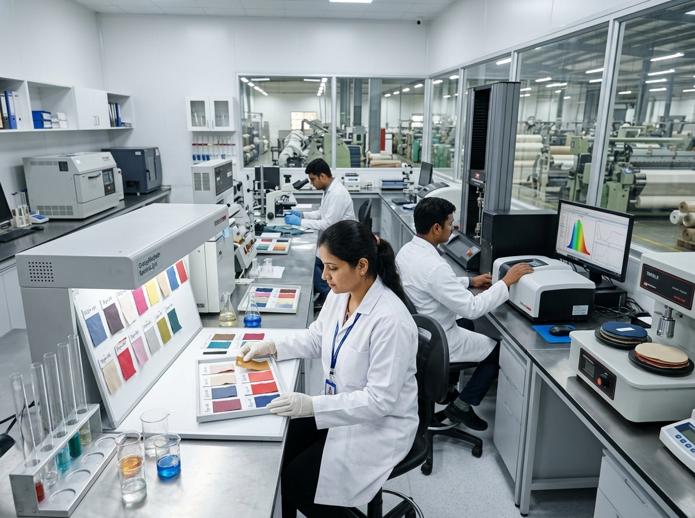

Quality Standards & Testing
Rigorous quality control processes ensuring export-grade textile processing.
Our Commitment to Quality
At Udhayaa Textile Processing, quality is not an afterthought; it is built into every stage of our process. We understand that our output directly impacts the value of your final product.
Our quality assurance protocols are designed to meet stringent export standards, minimizing rejection rates and ensuring that your fabric performs exactly as required by your end-buyers.

Standard Quality Checkpoints
Greige Inspection
Initial assessment of raw fabric for weaving defects, weight verification, and dimensional checks before processing begins.
Lab-Dip Matching
Precise color formulation and lab-dip generation for client approval prior to bulk dyeing, ensuring exact shade replication.
In-Process Control
Continuous monitoring of temperature, pH, and chemical concentrations during dyeing and printing phases to ensure consistency.
Final Evaluation
Comprehensive testing of the finished fabric, including color fastness, shrinkage testing, and visual defect checking.
Testing Parameters
Color Fastness to Washing
Ensuring dyes remain stable and do not bleed during standard domestic or industrial washing cycles.
Color Fastness to Rubbing (Crocking)
Testing both wet and dry rubbing to verify that color does not transfer to other surfaces.
Dimensional Stability (Shrinkage)
Measuring fabric shrinkage after washing to ensure it meets tolerance limits for the intended application.
Fabric Weight (GSM) Verification
Confirming the finished fabric weight aligns with client specifications and processing agreements.
Require Specific Testing?
Discuss your exact quality parameter requirements with our technical team.
Contact Us